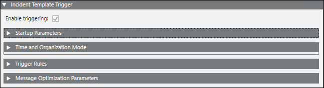

Incident Template Trigger Expander
This expander allows you to configure automatic incident triggering.

- Enable triggering: Enables automatic incident triggering if the check box is selected.
- Startup Parameters: Allows you to control some aspects of the behavior of incident template triggering.
- Time and Organization Mode: Defines a set of time-dependent preconditions for the triggering of the incident template.
- Trigger Rule: Defines the filter rules that can be applied to events.
- Message Optimization Parameters (Available only for Reno Plus license users): Provides a way to group the events raised during quick succession and generate a consolidated message (summary incident) describing the event burst situation.

NOTE:
You can configure the alarm filter time duration before the Notification service host starts. If any event comes and meets the trigger criteria during this duration, then the respective notification is sent to the recipients. To do this set the AlarmSubscriptionFilterTimeInMinutes flag located in the Mns_ProjectSpecific.config file under [Installation Drive]:\[Installation Folder]\[Project Name]\mns. The default value is “-10” in minutes.